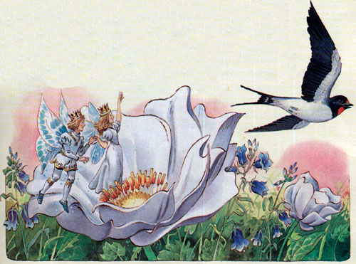

Дюймовочка
Г. Х. Андерсон
Жила-была женщина; очень ей хотелось иметь ребёнка, да где его взять? И вот она отправилась к одной старой колдунье и сказала ей:
— Мне так хочется иметь ребёночка; не скажешь ли ты, где мне его достать?
— Отчего же! — сказала колдунья. — Вот тебе ячменное зерно; это не простое зерно, не из тех, что крестьяне сеют в поле или бросают курам; посади-ка его в цветочный горшок — увидишь, что будет!
— Спасибо! — сказала женщина и дала колдунье двенадцать скиллингов; потом пошла домой, посадила ячменное зерно в цветочный горшок, и вдруг из него вырос большой чудесный цветок вроде тюльпана, но лепестки его были ещё плотно сжаты, точно у нераспустившегося бутона.
— Какой славный цветок! — сказала женщина и поцеловала красивые пёстрые лепестки.
Что-то щёлкнуло, и цветок распустился. Это был точь-в-точь тюльпан, но в самой чашечке на зелёном стульчике сидела крошечная девочка. Она была такая нежная, маленькая, всего с дюйм ростом, её и прозвали Дюймовочкой.
Блестящая лакированная скорлупка грецкого ореха была её колыбелькою, голубые фиалки — матрацем, а лепесток розы — одеяльцем; в эту колыбельку её укладывали на ночь, а днём она играла на столе. На стол женщина поставила тарелку с водою, а на края тарелки положила венок из цветов; длинные стебли цветов купались в воде, у самого же края плавал большой лепесток тюльпана. На нём Дюймовочка могла переправляться с одной стороны тарелки на другую; вместо вёсел у неё были два белых конских волоса. Всё это было прелесть как мило! Дюймовочка умела и петь, и такого нежного, красивого голоска никто ещё не слыхивал!
Раз ночью, когда она лежала в своей колыбельке, через разбитое оконное стекло пролезла большущая жаба, мокрая, безобразная! Она вспрыгнула прямо на стол, где спала под розовым лепестком Дюймовочка.
— Вот и жена моему сынку! — сказала жаба, взяла ореховую скорлупу с девочкой и выпрыгнула через окно в сад.
Там протекала большая, широкая река; у самого берега было топко и вязко; здесь-то, в тине, и жила жаба с сыном. У! Какой он был тоже гадкий, противный! Точь-в-точь мамаша.
— Коакс, коакс, брекке-ке-кекс! — только и мог он сказать, когда увидал прелестную крошку в ореховой скорлупке.
— Тише ты! Она ещё проснётся, пожалуй, да убежит от нас, — сказала старуха жаба. — Она ведь легче лебединого пуха! Высадим-ка её посередине реки на широкий лист кувшинки — это ведь целый остров для такой крошки, оттуда она не сбежит, а мы пока приберём там, внизу, наше гнёздышко. Вам ведь в нём жить да поживать.
В реке росло множество кувшинок; их широкие зелёные листья плавали по поверхности воды. Самый большой лист был дальше всего от берега; к этому-то листу подплыла жаба и поставила туда ореховую скорлупу с девочкой.
Бедная крошка проснулась рано утром, увидала, куда она попала, и горько заплакала: со всех сторон была вода, и ей никак нельзя было перебраться на сушу!
А старая жаба сидела внизу, в тине, и убирала своё жилище тростником и жёлтыми кувшинками — надо же было приукрасить всё для молодой невестки! Потом она поплыла со своим безобразным сынком к листу, где сидела Дюймовочка, чтобы взять прежде всего её хорошенькую кроватку и поставить в спальне невесты. Старая жаба очень низко присела в воде перед девочкой и сказала:
— Вот мой сынок, твой будущий муж! Вы славно заживёте с ним у нас в тине.
— Коакс, коакс, брекке-ке-кекс! — только и мог сказать сынок.
Они взяли хорошенькую кроватку и уплыли с ней, а девочка осталась одна-одинёшенька на зелёном листе и горько-горько плакала, — ей вовсе не хотелось жить у гадкой жабы и выйти замуж за её противного сына. Маленькие рыбки, которые плавали под водой, верно, видели жабу с сынком и слышали, что она говорила, потому что все повысунули из воды головки, чтобы поглядеть на крошку невесту. А как они увидели её, им стало ужасно жалко, что такой миленькой девочке приходится идти жить к старой жабе в тину. Не бывать же этому! Рыбки столпились внизу, у стебля, на котором держался лист, и живо перегрызли его своими зубами; листок с девочкой поплыл по течению, дальше, дальше… Теперь уж жабе ни за что было не догнать крошку!
Дюймовочка плыла мимо разных прелестных местечек, и маленькие птички, которые сидели в кустах, увидав её, пели:
— Какая хорошенькая девочка!
А листок всё плыл да плыл, и вот Дюймовочка попала за границу.
Красивый белый мотылёк всё время порхал вокруг неё и наконец уселся на листок — уж очень ему понравилась Дюймовочка! А она ужасно радовалась: гадкая жаба не могла теперь догнать её, а вокруг всё было так красиво! Солнце так и горело золотом на воде! Дюймовочка сняла с себя пояс, одним концом обвязала мотылька, а другой привязала к своему листку, и листок поплыл ещё быстрее.
Мимо летел майский жук, увидал девочку, обхватил её за тонкую талию лапкой и унёс на дерево, а зелёный листок поплыл дальше, и с ним мотылёк — он ведь был привязан и не мог освободиться.
Ах, как перепугалась бедняжка, когда жук схватил её и полетел с ней на дерево! Особенно ей жаль было хорошенького мотылёчка, которого она привязала к листку: ему придётся теперь умереть с голоду, если не удастся освободиться. Но майскому жуку и горя было мало.
Он уселся с крошкой на самый большой зелёный лист, покормил её сладким цветочным соком и сказал, что она прелесть какая хорошенькая, хоть и совсем непохожа на майского жука.
Потом к ним пришли с визитом другие майские жуки, которые жили на том же дереве. Они оглядывали девочку с головы до ног, и жучки-барышни шевелили усиками и говорили:
— У неё только две ножки! Жалко смотреть!
— Какая у неё тонкая талия! Фи! Она совсем как человек! Как некрасиво! — сказали в один голос все жуки женского пола.
Дюймовочка была премиленькая! Майскому жуку, который принёс её, она тоже очень понравилась сначала, а тут вдруг и он нашёл, что она безобразна, и не захотел больше держать её у себя — пусть идёт куда хочет. Он слетел с нею с дерева и посадил её на ромашку. Тут девочка принялась плакать о том, что она такая безобразная: даже майские жуки не захотели держать её у себя! А на самом-то деле она была прелестнейшим созданием: нежная, ясная, точно лепесток розы.
Целое лето прожила Дюймовочка одна-одинёшенька в лесу. Она сплела себе колыбельку и подвесила её под большой лопушиный лист — там дождик не мог достать её. Ела крошка сладкую цветочную пыльцу, а пила росу, которую каждое утро находила на листочках. Так прошли лето и осень; но вот дело пошло к зиме, длинной и холодной. Все певуньи птички разлетелись, кусты и цветы увяли, большой лопушиный лист, под которым жила Дюймовочка, пожелтел, весь засох и свернулся в трубочку. Сама крошка мёрзла от холода: платьице её всё разорвалось, а она была такая маленькая, нежная — замерзай, да и всё тут! Пошёл снег, и каждая снежинка была для неё то же, что для нас целая лопата снега; мы ведь большие, а она была всего-то с дюйм! Она завернулась было в сухой лист, но он совсем не грел, и бедняжка сама дрожала как лист.
Возле леса, куда она попала, лежало большое поле; хлеб давно был убран, одни голые, сухие стебельки торчали из мёрзлой земли; для Дюймовочки это был целый лес. Ух! Как она дрожала от холода! И вот пришла бедняжка к дверям полевой мыши; дверью была маленькая дырочка, прикрытая сухими стебельками и былинками. Полевая мышь жила в тепле и довольстве: все амбары были битком набиты хлебными зёрнами; кухня и кладовая ломились от припасов! Дюймовочка стала у порога, как нищенка, и попросила подать ей кусочек ячменного зерна — она два дня ничего не ела!
— Ах ты бедняжка! — сказала полевая мышь: она была, в сущности, добрая старуха. — Ступай сюда, погрейся да поешь со мною!
Девочка понравилась мыши, и мышь сказала:
— Ты можешь жить у меня всю зиму, только убирай хорошенько мои комнаты да рассказывай мне сказки — я до них большая охотница.
v
И Дюймовочка стала делать всё, что приказывала ей мышь, и зажила отлично.
— Скоро, пожалуй, у нас будут гости, — сказала как-то полевая мышь. — Мой сосед обычно навещает меня раз в неделю. Он живёт ещё куда лучше меня: у него огромные залы, а ходит он в чудесной бархатной шубке. Вот если бы тебе удалось выйти за него замуж! Ты бы зажила на славу! Беда только, что он слеп и не может видеть тебя; но ты расскажи ему самые лучшие сказки, какие только знаешь.
Но девочке мало было дела до всего этого: ей вовсе не хотелось выйти замуж за соседа — ведь это был крот. Он в самом деле скоро пришёл в гости к полевой мыши.
Правда, он носил чёрную бархатную шубку, был очень богат и учен; по словам полевой мыши, помещение у него было раз в двадцать просторнее, чем у неё, но он совсем не любил ни солнца, ни прекрасных цветов и отзывался о них очень дурно — он ведь никогда не видел их. Девочке пришлось петь, и она спела две песенки: «Майский жук, лети, лети» и «Бродит по лугам монах», да так мило, что крот прямо-таки в неё влюбился. Но он не сказал ни слова — он был такой степенный и солидный господин.
Крот недавно прорыл под землёй длинную галерею от своего жилья к дверям полевой мыши и позволил мыши и девочке гулять по этой галерее сколько угодно. Крот просил только не пугаться мёртвой птицы, которая лежала там. Это была настоящая птица, с перьями, с клювом; она, должно быть, умерла недавно, в начале зимы, и была зарыта в землю как раз там, где крот прорыл свою галерею.
Крот взял в рот гнилушку — в темноте это ведь всё равно, что свечка, — и пошёл вперёд, освещая длинную тёмную галерею. Когда они дошли до места, где лежала мёртвая птица, крот проткнул своим широким носом в земляном потолке дыру, и в галерею пробился дневной свет. В самой середине галереи лежала мёртвая ласточка; хорошенькие крылья были крепко прижаты к телу, лапки и головка спрятаны в пёрышки; бедная птичка, верно, умерла от холода. Девочке стало ужасно жаль её, она очень любила этих милых птичек, которые целое лето так чудесно пели ей песенки, но крот толкнул птичку своей короткой лапой и сказал:
— Небось не свистит больше! Вот горькая участь родиться пичужкой! Слава Богу, что моим детям нечего бояться этого! Этакая птичка только и умеет чирикать — поневоле замёрзнешь зимой!
— Да, да, правда ваша, умные слова приятно слышать, — сказала полевая мышь. — Какой прок от этого чириканья? Что оно приносит птице? Холод и голод зимой? Много, нечего сказать!
Дюймовочка не сказала ничего, но когда крот с мышью повернулись к птице спиной, нагнулась к ней, раздвинула пёрышки и поцеловала её прямо в закрытые глазки. «Может быть, эта та самая, которая так чудесно распевала летом! — подумала девочка. — Сколько радости доставила ты мне, милая, хорошая птичка!»
Крот опять заткнул дыру в потолке и проводил дам обратно. Но девочке не спалось ночью. Она встала с постели, сплела из сухих былинок большой славный ковёр, снесла его в галерею и завернула в него мёртвую птичку; потом отыскала у полевой мыши пуху и обложила им всю ласточку, чтобы ей было потеплее лежать на холодной земле.
— Прощай, миленькая птичка, — сказала Дюймовочка. — Прощай! Спасибо тебе за то, что ты так чудесно пела мне летом, когда все деревья были такие зелёные, а солнышко так славно грело!
И она склонила голову на грудь птички, но вдруг испугалась — внутри что-то застучало. Это забилось сердечко птицы: она не умерла, а только окоченела от холода, теперь же согрелась и ожила.
Осенью ласточки улетают в тёплые края, а если которая запоздает, то от холода окоченеет, упадёт замертво на землю, и её засыплет холодным снегом.
Девочка вся задрожала от испуга — птица ведь была в сравнении с крошкой просто великаном, — но всё-таки собралась с духом, ещё больше закутала ласточку, потом сбегала принесла листок мяты, которым закрывалась вместо одеяла сама, и покрыла им голову птички.
На следующую ночь Дюймовочка опять потихоньку пробралась к ласточке. Птичка совсем уже ожила, только была ещё очень слаба и еле-еле открыла глаза, чтобы посмотреть на девочку, которая стояла перед нею с кусочком гнилушки в руках, — другого фонаря у неё не было.
— Благодарю тебя, милая крошка! — сказала больная ласточка. — Я так славно согрелась. Скоро я совсем поправлюсь и опять вылечу на солнышко.
— Ах, — сказала девочка, — теперь так холодно, идёт снег! Останься лучше в своей тёплой постельке, я буду ухаживать за тобой.
И Дюймовочка принесла птичке воды в цветочном лепестке. Ласточка попила и рассказала девочке, как поранила себе крыло о терновый куст и поэтому не смогла улететь вместе с другими ласточками в тёплые края. Как упала на землю и… да больше она уж ничего не помнила и как попала сюда — не знала.
Всю зиму прожила тут ласточка, и Дюймовочка ухаживала за ней. Ни крот, ни полевая мышь ничего не знали об этом — они ведь совсем не любили птичек.
Когда настала весна и пригрело солнышко, ласточка распрощалась с девочкой, и Дюймовочка ототкнула дыру, которую проделал крот.
Солнце так славно грело, и ласточка спросила, не хочет ли девочка отправиться вместе с ней, — пускай сядет к ней на спину, и они полетят в зелёный лес! Но Дюймовочка не захотела бросить полевую мышь — она ведь знала, что старуха очень огорчится.
— Нет, нельзя! — сказала девочка ласточке.
— Прощай, прощай, милая добрая крошка! — сказала ласточка и вылетела на солнышко.
Дюймовочка посмотрела ей вслед, и у неё даже слёзы навернулись на глазах, — уж очень полюбилась ей бедная птичка.
— Кви-вить, кви-вить! — прощебетала птичка и скрылась в зелёном лесу.
Девочке было очень грустно. Ей совсем не позволяли выходить на солнышко, а хлебное поле так всё заросло высокими толстыми колосьями, что стало для бедной крошки дремучим лесом.
— Летом тебе придётся готовить себе приданое! — сказала ей полевая мышь. Оказалось, что скучный сосед в бархатной шубе посватался за девочку.
— Надо, чтобы у тебя всего было вдоволь, а там выйдешь замуж за крота и подавно ни в чём нуждаться не будешь!
И девочке пришлось прясть по целым дням, а старуха мышь наняла четырёх пауков для тканья, и они работали день и ночь.
Каждый вечер крот приходил к полевой мыши в гости и всё только и болтал о том, что вот скоро лету будет конец, солнце перестанет так палить землю, — а то она совсем уж как камень стала, — и тогда они сыграют свадьбу. Но девочка была совсем не рада: ей не нравился скучный крот. Каждое утро на восходе солнышка и каждый вечер на закате Дюймовочка выходила на порог мышиной норки; иногда ветер раздвигал верхушки колосьев, и ей удавалось увидеть кусочек голубого неба. «Как светло, как хорошо там, на воле!» — думала девочка и вспоминала о ласточке; ей очень хотелось бы повидаться с птичкой, но ласточки нигде не было видно: должно быть, она летала там, далеко-далеко, в зелёном лесу!
К осени Дюймовочка приготовила всё своё приданое.
— Через месяц твоя свадьба! — сказала девочке полевая мышь.
Но крошка заплакала и сказала, что не хочет выходить замуж за скучного крота.
— Пустяки! — сказала старуха мышь. — Только не капризничай, а то я укушу тебя — видишь, какой у меня белый зуб? У тебя будет чудеснейший муж. У самой королевы нет такой бархатной шубки, как у него! Да и в кухне и в погребе у него не пусто! Благодари Бога за такого мужа!
Наступил день свадьбы. Крот пришёл за девочкой. Теперь ей приходилось идти за ним в его нору, жить там, глубоко-глубоко под землёй, и никогда не выходить на солнце, — крот ведь терпеть его не мог! А бедной крошке было так тяжело навсегда распроститься с красным солнышком! У полевой мыши она всё-таки могла хоть изредка любоваться на него.
И Дюймовочка вышла взглянуть на солнце в последний раз. Хлеб был уже убран с поля, и из земли опять торчали одни голые, засохшие стебли. Девочка отошла от дверей подальше и протянула к солнцу руки:
— Прощай, ясное солнышко, прощай!
Потом она обняла ручонками маленький красный цветочек, который рос тут, и сказала ему:
— Кланяйся от меня милой ласточке, если увидишь её!
— Кви-вить, кви-вить! — вдруг раздалось над её головой.
Дюймовочка подняла глаза и увидела ласточку, которая пролетала мимо. Ласточка тоже увидела девочку и очень обрадовалась, а девочка заплакала и рассказала ласточке, как ей не хочется выходить замуж за противного крота и жить с ним глубоко под землёй, куда никогда не заглянет солнышко.
— Скоро придёт холодная зима, — сказала ласточка, — и я улетаю далеко-далеко, в тёплые края. Хочешь лететь со мной? Ты можешь сесть ко мне на спину — только привяжи себя покрепче поясом, — и мы улетим с тобой далеко от гадкого крота, далеко за синие моря, в тёплые края, где солнышко светит ярче, где всегда лето и цветут чудные цветы! Полетим со мной, милая крошка! Ты ведь спасла мне жизнь, когда я замерзала в тёмной, холодной яме.
— Да, да, я полечу с тобой! — сказала Дюймовочка, села птичке на спину, упёрлась ножками в её распростёртые крылья и крепко привязала себя поясом к самому большому перу.
Ласточка взвилась стрелой и полетела над тёмными лесами, над синими морями и высокими горами, покрытыми снегом. Тут было страсть как холодно; Дюймовочка вся зарылась в тёплые перья ласточки и только головку высунула, чтобы любоваться всеми прелестями, которые встречались в пути.
Но вот и тёплые края! Тут солнце сияло уже гораздо ярче, а около канав и изгородей рос зелёный и чёрный виноград. В лесах зрели лимоны и апельсины, пахло миртами и душистой мятой, а по дорожкам бегали прелестные ребятишки и ловили больших пёстрых бабочек. Но ласточка летела всё дальше и дальше, и чем дальше, тем было всё лучше. На берегу красивого голубого озера, посреди зелёных кудрявых деревьев, стоял старинный белый мраморный дворец. Виноградные лозы обвивали его высокие колонны, а наверху, под крышей, лепились ласточкины гнёзда. В одном из них и жила ласточка, что принесла Дюймовочку.
— Вот мой дом! — сказала ласточка. — А ты выбери себе внизу какой-нибудь красивый цветок, я тебя посажу в него, и ты чудесно заживёшь!
— Вот было бы хорошо! — сказала крошка и захлопала в ладоши.
Внизу лежали большие куски мрамора — это свалилась верхушка одной колонны и разбилась на три куска, между ними росли крупные белые цветы. Ласточка спустилась и посадила девочку на один из широких лепестков. Но вот диво! В самой чашечке цветка сидел маленький человечек, беленький и прозрачный, точно хрустальный. На голове у него сияла прелестная золотая корона, за плечами развевались блестящие крылышки, а сам он был не больше Дюймовочки.
Это был эльф. В каждом цветке живёт эльф, мальчик или девочка, а тот, который сидел рядом с Дюймовочкой, был сам король эльфов.
— Ах, как он хорош! — шепнула Дюймовочка ласточке.
Маленький король совсем перепугался при виде ласточки. Он был такой крошечный, нежный, и она показалась ему просто чудовищем. Зато он очень обрадовался, увидав нашу крошку, — он никогда ещё не видывал такой хорошенькой девочки! И он снял свою золотую корону, надел её Дюймовочке на голову и спросил, как её зовут и хочет ли она быть его женой, королевой эльфов и царицей цветов? Вот это так муж! Не то что сын жабы или крот в бархатной шубе! И девочка согласилась. Тогда из каждого цветка вылетели эльфы — мальчики и девочки — такие хорошенькие, что просто прелесть! Все они поднесли Дюймовочке подарки. Самым лучшим была пара прозрачных стрекозиных крылышек. Их прикрепили к спинке девочки, и она тоже могла теперь летать с цветка на цветок! Вот-то была радость! А ласточка сидела наверху, в своём гнёздышке, и пела им, как только умела. Но самой ей было очень грустно: она крепко полюбила девочку и хотела бы век не расставаться с ней.
— Тебя больше не будут звать Дюймовочкой! — сказал эльф. — Это некрасивое имя. А ты такая хорошенькая! Мы будем звать тебя Майей!
— Прощай, прощай! — прощебетала ласточка и опять полетела из тёплых краёв далеко, далеко — в Данию. Там у неё было маленькое гнездо, как раз над окном человека, большого мастера рассказывать сказки.
Ему-то она и спела своё «кви-вить», а потом и мы узнали эту историю.